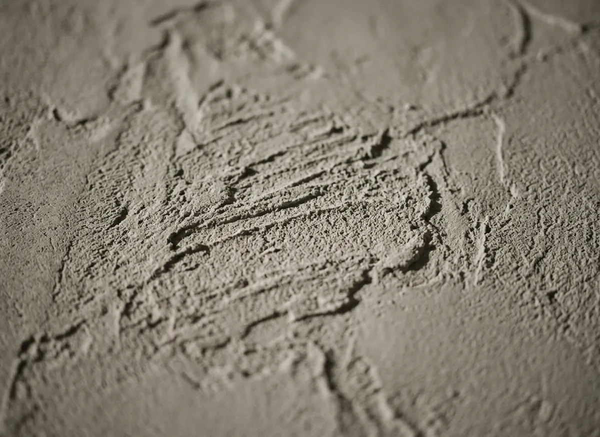
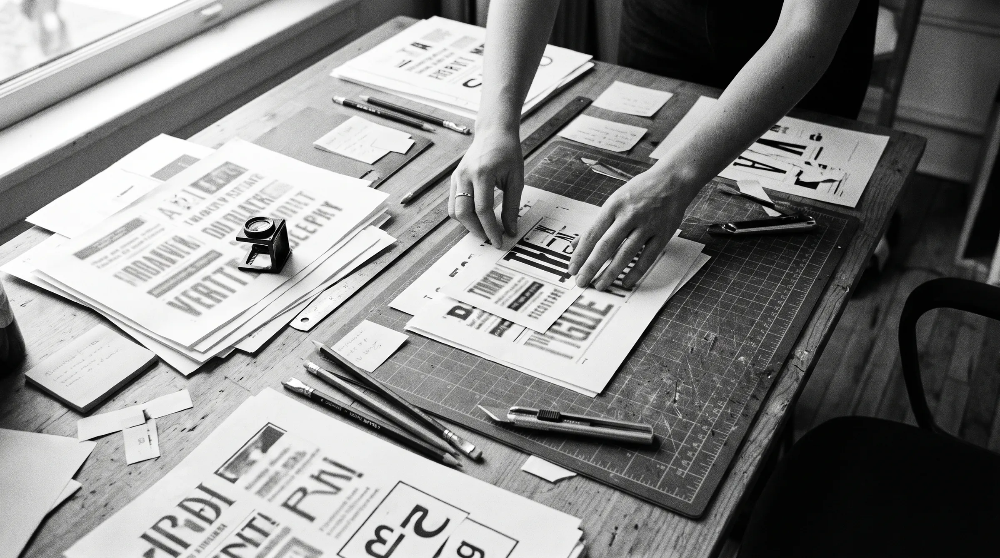
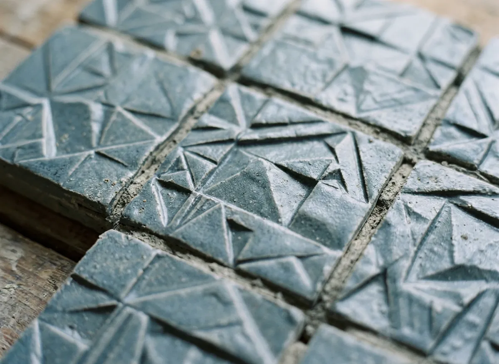
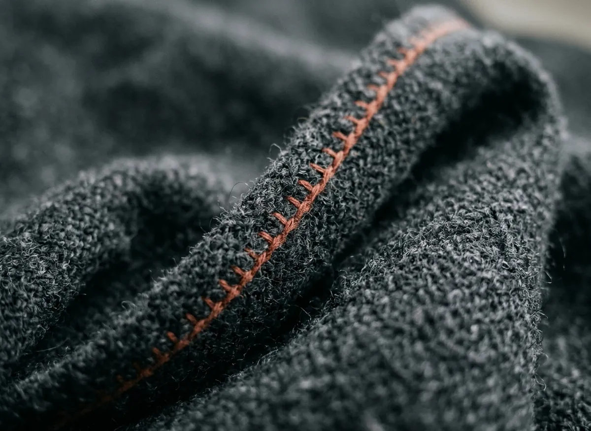

Casa Alfama.
The project
Casa Alfama is a nine-room guesthouse in a 19th-century house in Alfama, Lisbon. Its owners wanted a name, a look and a website that would not lean on tiles and fado. We drew it in grey, then added one colour.
- Year
- 2026
- Sector
- Hospitality
- Scope
- Identity/Web/Signage
- Timeline
- Eleven weeks
Fictional client.


Brief
Nine rooms, one staircase and a street too steep for taxis.
The guesthouse was changing hands and reopening. The owners wanted guests to book direct, and to arrive knowing what kind of place it was before they saw it. They wanted nothing that looked like the postcards.
Start a projectApproach
We spent the first three weeks on the house, not the logo. We drew the staircase, the door frames and the way light falls in the corridor. Grey only. The identity came from what was already there.
Plaster, stone and shadow became our vocabulary. We tested every idea in monochrome before the owners saw a single colour.
Identity
A monogram cut from the stairwell.
The mark is two letters, C and A, built from the angle where the staircase meets the wall. It works at key size and on a façade. The wordmark is set wide and low, like the doors. One ochre, taken from the faded paint of the old shutters, appears only on the front door and the booking button.

Web
Booking first, everything else second.
The site has four pages. The first screen shows the house and one button: Check availability. Rooms are described by what you hear, see and touch, not by a list of amenities. The pages load fast on a phone in a stairwell, which is where many guests would read them.

Outcome
Within the first season, direct bookings passed the platforms. Guests began to mention the signage and the quiet before the rooms.
The identity has since been applied to door numbers, key tags, the breakfast menu and a small printed map. The owners now update the site themselves.
“We booked directly more than we ever expected.”
Case study and quote are fictional.
More work


Send the brief. We reply within one business day.
Brief sent.
Thanks — we'll reply within one business day.
While you wait, see the work.
See all projects© 2026
Brief.
Tell us what you are making and when it has to exist. We will say whether we are the right studio.
Write
Visit
Lisbon, by appointment.